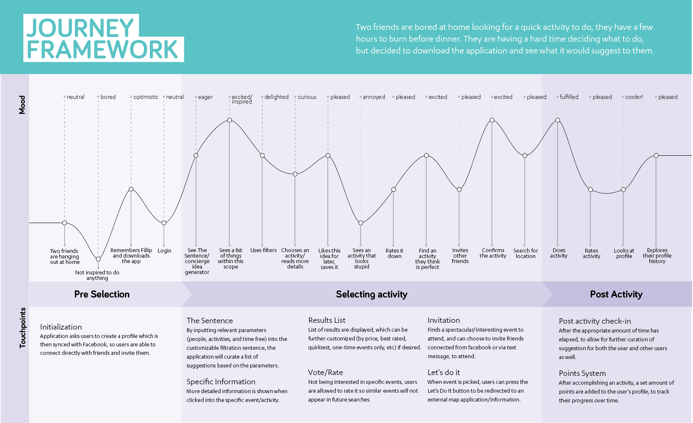

Fillip.
A mobile application designed to help people decide on activities to do in the moment, by making relevant and personalized suggestions.
ROLES: Ideation, Research, UI, IxD, UX, Motion Graphics.
Finding Openings.
INSPIRATION AND PRECEDENTS. The group began by identifying a sector with an opportunity for design intervention. We found that across cities, people are experiencing friction when trying to come up with ideas for fun and interesting things to do. Currently, city-specific news/event websites may create lists of events and activities in the city, but they are presented to individuals as merely a list format, with no ability to filter or create personalized suggestions. It becomes very difficult to sort through these large lists and find interesting things to do, and individuals may end up giving up and feeling bored once again.
ANTICIPATORY DESIGN. We were inspired by the concept of anticipatory design, and removing unnecessary choices to someone’s day and preventing the well-documented phenomenon of decision fatigue: meaning the more things we decide on over the course of a day, the less ability we have to make effective decisions. We saw potential to apply the concept of anticipatory design to finding things to do, as these types of algorithms have potential to curate more relevant and interesting suggestions to users.
Research Analysis.
PERSONAS. The team began the process by creating personas to help identify the goals, needs, and concerns of potential application users. This consisted of conducting interviews with a variety of individuals we believed may be interested in this style of mobile application. Information gathered from these interviews were then analysed and translated into different personas. Two personas can be seen below that show the diversity of user that may be interested in this application. While a college student and a single dad may lead very different lives, they share a common goal of finding activities that interest them without having to parse through irrelevant suggestions (essentially - the dad will want to see everything the college student won't)!
VOICE AND TONE. Through persona exploration, we realised that with a broad target audience, the application needed a very specific friendly tone to welcome everyone. Creating a voice and tone guide helped inspire the personality of Fillip, which was applied to not only written content, but overall visual interface decisions as well.
EXPERT but not BOSSY.
PLAYFUL but not CHILDISH.
CHEEKY but not SNARKY.
WEIRD but not INAPPROPRIATE.
OUTSPOKEN but not RUDE.
INFORMAL but not SLOPPY.
PRINCIPLES. The team then ideated a set of principles based on the goals and needs of our personas that would inform any interface and design decisions. Our personas helped guide our design principles: most importantly, we realised that with a broad target audience, the application needed a very specific friendly tone to welcome everyone.
ANTICIPATORY. As our users want a personalized experience, Fillip should anticipate relevant activities based on user’s history.
AUTONOMOUS. As our users aspire to make their own decisions, Fillip should give them resources, and act as a catalyst to find activities.
DELIGHTFUL AND PLAYFUL. As our users are lighthearted and spontaneous, Fillip should have a personality to match this, using a voice and tone guide.
EFFICIENT. Our users are busy individuals who want to be spontaneous with any free time they have, so Fillip should maximise their productivity when finding activities.
SOCIAL. Our users seek to spend quality time with their friends and family, so Fillip should help promote this while not getting in the way during the activities themselves.
LOW RESISTANCE. As our users want to make quick decisions, Fillip should provide them with just enough information without an abundance of content.
JOURNEY FRAMEWORK. A journey framework was then created with these principles in mind, as well as the overall user flow through the application.
Process.
INITIAL WIREFRAMES. These gray box wireframes allowed the team to conduct initial evaluations of the interface design. For example, each member of the team conducted a heuristic evaluation, which illuminated problems with an excess of information and a lack of minimalist design.
USER TESTING. The interface was then fully prototyped and several rounds of usability testing were conducted to allow for refinement and to solve any usability problems. We had participants walk through several tasks using the prototyped application and employed the think-aloud protocol. This, combined with a pre- and post-test questionnaire helped to establish problem areas. We found that our color usage was repetitive, our button hierarchy needed to be improved, the decision-making needed to be simplified, and the implementation of providing users achievements was unnecessary and confusing (and was therefore removed). See mockups tested below:

MY ROLES. Throughout the course of this process, I acted as project manager of the team. Not only did I participate in the creation and ideation of personas, principles, wireframes, prototypes, and testing, I was also in charge of delegating roles for groupmates and ensuring that any design elements remained consistent across screens being designed. Furthermore, I was in charge of all content and copy creation, and designed the Activity Decision screens. I also created all motion graphics for the final video proposal.
App Creation.
FINAL INTERFACE. Below are high-fidelity mockups of the final interface iteration, to help in illustrating the user's journey.
HOMESCREEN. Fillip implements a simple filtration system on the homescreen to only anticipate activities that are feasible for the user to do in that moment.
CHOOSING ACTIVITIES. Having users compare two activities instead of endless scrolling or swiping encourages snap decisions and spontaneity.
ACTIVITY DETAILS. Providing users more specific information, and descriptions written with easygoing language help users decide on an activity.
CONFIRMATION SCREEN. Sufficient feedback is provided before users commit, and spontaniety is further encouraged by allowing friend invitations.

SAVE FOR LATER. Allows users to revisit interesting activity ideas - which ensures they will continually use Fillip as their activity idea reference.
PROFILE. A simple profile page allows users to connect with their friends, and review the catalogue of all the fun activities they've done in the past.